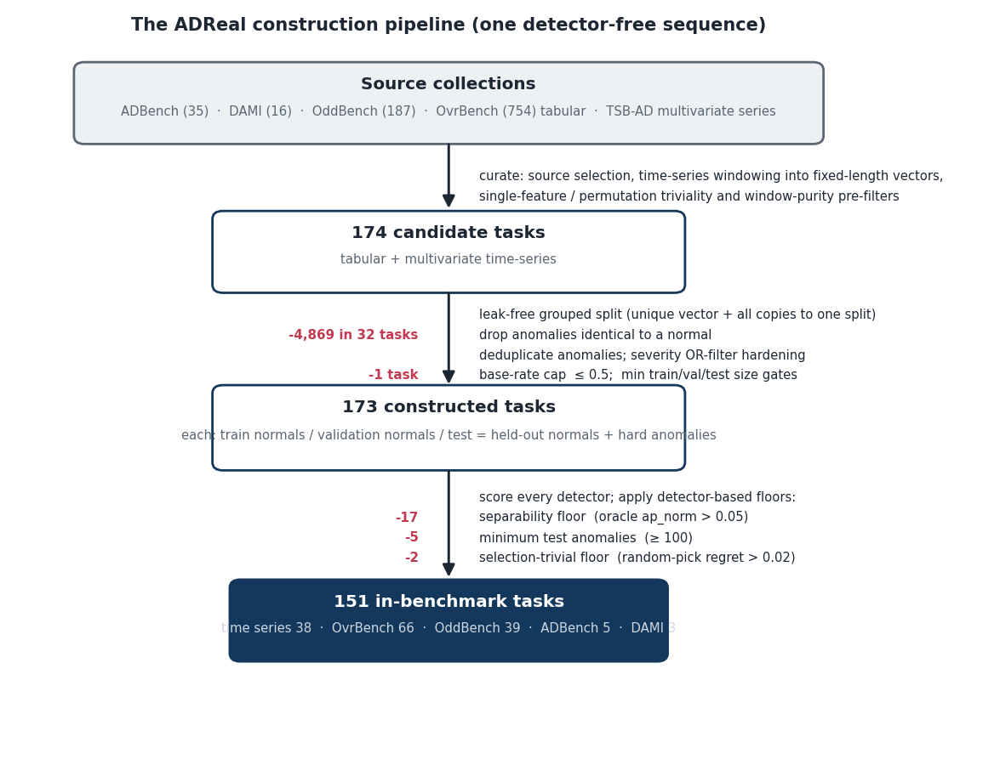
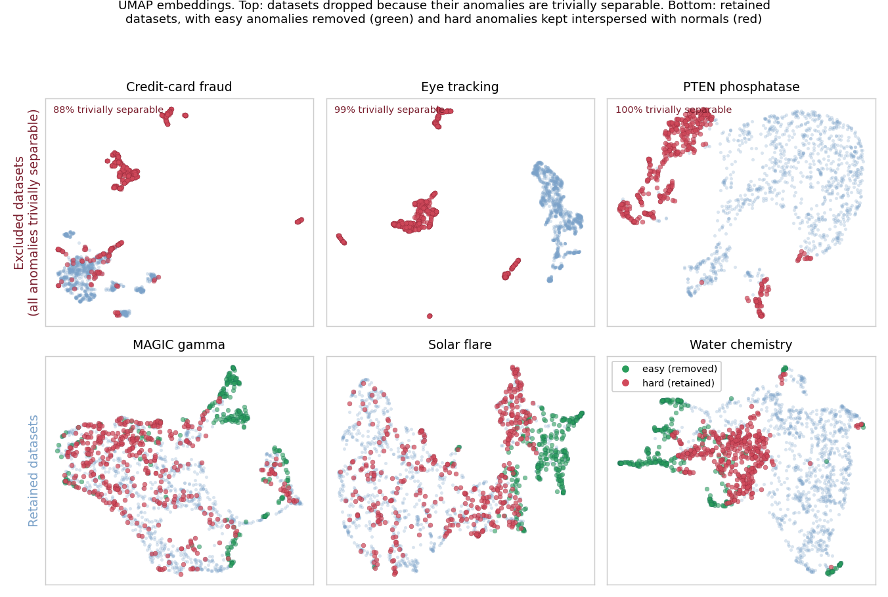
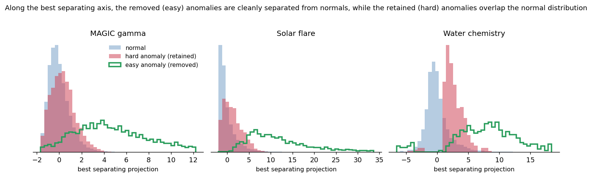
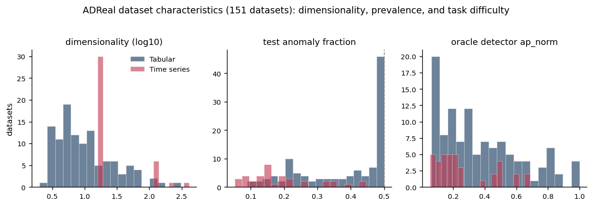
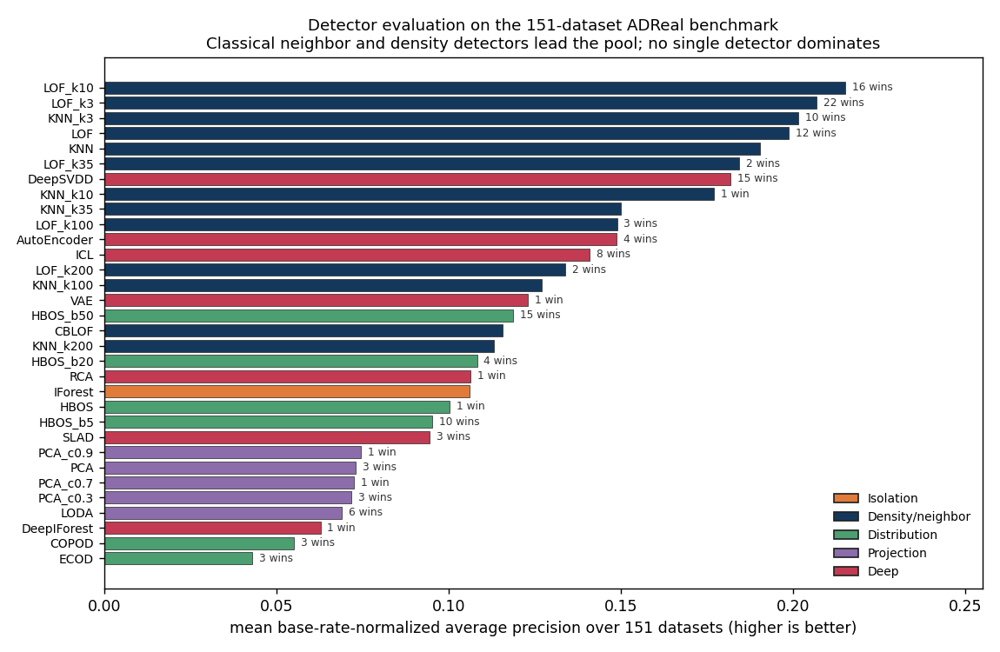
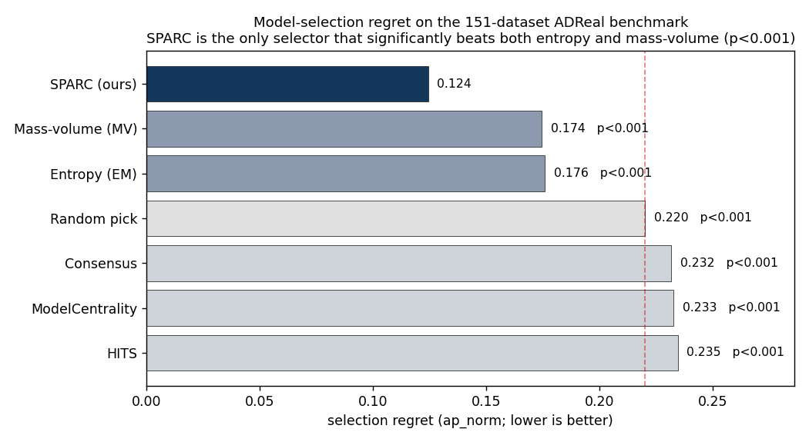
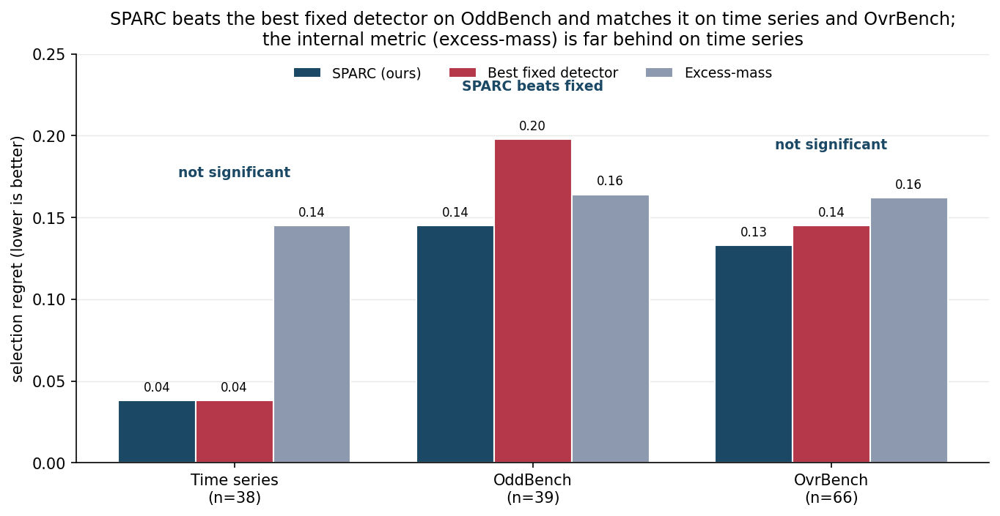

Generic anomaly detection methods are commonly evaluated on benchmarks that combine datasets containing normal observations and labeled anomalies. Designing such benchmarks is itself challenging. Existing datasets may contain duplicated anomalies, train/test leakage, anomalies that are trivially separable, or anomalies that are effectively indistinguishable from normal observations. Some also provide insufficient data for reliable comparisons, while commonly used evaluation metrics can be distorted by differences in anomaly prevalence. Reliable benchmarking therefore requires curated datasets, prevalence-aware evaluation, and statistically grounded comparisons between methods.
We introduce ADReal, a benchmark constructed by systematically curating and filtering datasets from multiple existing anomaly detection benchmarks. We remove duplicates, contaminated anomalies, leakage, and datasets that are either trivially easy or effectively impossible, yielding 151 datasets spanning tabular and multivariate time-series data. On these datasets, we evaluate thirty-two widely used detectors, including classical isolation-, density-, distribution-, and projection-based methods and deep one-class and reconstruction-based models. Detectors are evaluated using a prevalence-aware metric that enables more comparable performance estimates across datasets with different anomaly rates.
ADReal also addresses a second problem: model selection. In real applications, anomalies are rare and heterogeneous, so a representative labeled anomaly sample may not be available for model selection or hyperparameter tuning. The detector must therefore often be selected using normal data alone. ADReal provides a controlled testbed for evaluating such normal-only selection methods: candidate detectors are selected without access to true anomalies, while their eventual performance on those anomalies provides an independent measure of selection quality. Using this testbed we evaluate popular unsupervised model-selection heuristics and release their results alongside the benchmark and detector evaluations.
Finally, we introduce SPARC, a normal-only selection method. It builds synthetic anomalies from the normal data by resampling a subset of each point's features from their own observed values, so every value stays realistic while the combination is unusual, and ranks candidate detectors by how well they separate these points from the normals. We benchmark every selection method against a demanding reference: always deploying the single detector with the best average performance. On ADReal this fixed detector is hard to beat, and the popular internal criteria, excess-mass and mass-volume, are significantly worse than it. No label-free method robustly beats this fixed detector. SPARC comes closest, reducing regret to 0.114 over ten random seeds against 0.130 on the classical pool and clearing excess-mass and mass-volume decisively ($p < 0.001$); but its edge over the fixed detector is modest and not statistically significant, and it disappears once deep detectors are eligible. That a purpose-built selector still does not robustly beat a single good detector is the paper's central finding. We release ADReal, the complete detector evaluations, SPARC, and the associated code.
New anomaly detection methods are introduced and compared on benchmarks that pair normal observations with labeled anomalies, drawn from fraud, industrial monitoring, health, and cybersecurity. The ranking such a benchmark produces is only as trustworthy as the data behind it. And because no single detector dominates (LOF wins on some datasets, KNN on others, HBOS on yet others), a practitioner must still choose one detector per dataset, usually with no labeled anomalies to guide the choice. A decade of work has proposed label-free selection criteria for exactly this, from excess-mass and mass-volume curves [1] to internal relative-evaluation scores [2], meta-learning [3], and rank aggregation across a model pool [4]. Detectors and the selectors that choose among them are judged on the same benchmarks, so both inherit whatever those benchmarks get wrong.
Existing benchmarks are contaminated in ways that distort both kinds of comparison. Many anomalies are separable by a single feature or a one-line threshold rule, so every detector scores well and the choice between them barely matters. Some anomalies are exact copies of normal points, labeled both ways because the feature vector does not capture what makes them anomalous, and no detector can ever separate them. Normals leak between train and test when a dataset's duplicate rows are split at random, so a detector is scored on points it has already seen. Some tasks are effectively unsolvable, with no detector beating a random ranking, so a comparison on them carries no signal. Base rates drift so high that the scoring metric divides by a vanishing denominator. And differences are reported as point gaps with no test of significance. A benchmark built on such data measures artifacts, of the detectors and of the methods that choose among them.
We rebuild the benchmark and audit it until it holds. ADReal is a collection of tabular and multivariate time-series datasets produced by one detector-free pipeline whose construction rules each close one contamination channel. On the resulting 151 datasets we evaluate thirty-two classical and deep detectors under a single consistent preprocessing, scored by a prevalence-aware metric, so no detector is handicapped by an inconsistency in the harness and the comparison is fair across datasets of different anomaly rates. ADReal then serves a second purpose: because a detector must in practice be chosen from normal data alone, the benchmark is also a controlled testbed for unsupervised model selection, where a method picks one detector without labels and is scored by its regret against the oracle-best detector, its criterion computed on held-out normals only. We evaluate eight popular selection methods under this protocol, against two references: a random pick and, more demanding, always deploying the single best-on-average detector.
The leakage-free protocol changes the result. Agreement-based selectors, which perform well under transductive evaluation [4, 18], do not beat a random pick once validation sees only normals. More telling is the comparison against the fixed-detector reference. It is hard to beat: the two internal criteria that clear a random pick, excess-mass and mass-volume, are significantly worse than it, and a recent injection-based selector [35] does not significantly improve on it. We introduce SPARC, which grades detectors on synthetic anomalies built from the normal data; it comes closest to the fixed detector, but its advantage is modest and not robust, so no label-free method reliably beats a single good detector.
Our contributions:
Anomaly detectors and benchmark suites. Established detectors span the standard families: isolation-based (Isolation Forest [8]), density- and neighbor-based (LOF [9], KNN), boundary-based (one-class SVM [10]), distribution-based (COPOD [11], ECOD [12], HBOS), projection-based (LODA [13], PCA), and deep one-class and reconstruction models (DeepSVDD [14]; see the review [15]). Surveys [15] and large empirical studies [5, 16] agree that no detector dominates across datasets, which is the fact that makes per-dataset selection necessary. Benchmark suites standardize the comparison: PyOD [6] provides reference implementations; ADBench [5] consolidates 57 tabular datasets and 30 algorithms and reports that no method is statistically best; the DAMI study [16] curates the classic ODDS-derived tabular collection; MacrOData [20] scales tabular outlier detection to thousands of datasets, including the OddBench and OvrBench collections we draw on; and TSB-AD [19] curates over a thousand time-series under a reliable protocol. These resources standardize detectors and data, but not the protocol under which a label-free selection method is judged.
How detectors are scored, and why the metric matters. Tabular benchmarks report ROC-AUC, average precision (area under precision-recall), and precision-at-n; PyOD and DAMI [6, 16] lead with ROC-AUC and precision-at-n, ADBench [5] with ROC-AUC and AUC-PR. Under the heavy class imbalance of anomaly detection, precision-recall analysis is more informative than ROC [26, 27], but average precision is not comparable across datasets of different anomaly rate: the precision-recall curve moves with prevalence [27], so the same detector scores differently as the base rate changes, and a raw AP gain can be a prevalence artifact rather than a real improvement [29]. Precision-recall-gain [28] rescales precision and recall against the always-positive baseline set by the base rate, which is the principle our metric follows. Time-series evaluation is more fragile still: the widely used point-adjustment protocol inflates scores so badly that a random score can look state of the art [31], and range-based and volume-under-the-surface measures [32, 33] were introduced to restore meaning. We take the lesson that a benchmark must fix one prevalence-aware metric rather than inherit these distortions.
Curation, preprocessing, and filtering in prior benchmarks. Data quality has been addressed before, piecemeal. The DAMI study [16] ships each dataset in normalized and unnormalized, with-duplicate and without-duplicate variants and in several downsampled contamination bands, and shows that normalization, duplicate removal, and outlier ratio each change method rankings, so one raw dataset yields many non-equivalent benchmark instances. Synthetic-anomaly benchmarks depend heavily on how anomalies are injected and only approximate genuine ones under strong assumptions [7]. TSB-AD [19] curates and filters time-series to drop unreliable cases. These works establish deduplication, contamination control, and filtering as necessary, but apply them locally and for detector comparison. ADReal turns them into one detector-free pipeline whose rules each close a specific contamination channel, applied uniformly across sources and aimed at both detector and selection-method evaluation.
Criticism of anomaly-detection benchmarks. A growing literature argues the benchmarks themselves manufacture progress. Wu and Keogh [30] show that popular time-series benchmarks are riddled with triviality, mislabeling, unrealistic anomaly density, and run-to-failure bias, so that a one-line moving average matches deep models. Röchner et al. [34] find that a trivial per-feature extreme-value rule is competitive with state-of-the-art deep detectors on standard tabular benchmarks, and argue evaluation must be rethought. These critiques target detector rankings; the same contamination is even more corrosive for selection, where a trivially separable or mislabeled task makes the choice among detectors meaningless. ADReal is built to remove exactly these channels.
Unsupervised model selection. Choosing a detector or its hyperparameters without labels is the harder problem, because both evaluation and comparison are infeasible without ground truth [3]. Internal criteria score a detector from its own output: excess-mass and mass-volume curves [1] and the internal relative-evaluation score IREOS [2]. Meta-learning transfers performance from a labeled corpus of datasets: MetaOD [3] regresses dataset meta-features to expected performance, ELECT [21] adapts by dataset similarity under a budget, and HYPER [22] uses a hypernetwork to search deep-detector hyperparameters. Closest to our approach, a recent line grades detectors on synthetic anomalies generated from normal data: SWSA [24] builds a pseudo-validation set of generated image anomalies to rank detectors and prompts, and DSV [25] selects self-supervised augmentations by how well they align with the anomaly-generating mechanism. SPARC (Section 6) is in this family, for general tabular and time-series data.
Evaluating selection methods, and consensus. How selection methods are themselves evaluated is contested. A large-scale study of internal strategies [17, 23] concludes that no internal metric reliably beats a naive baseline, selecting models only comparable to a randomly configured detector. A common signal is agreement: averaging or combining detector scores yields a consensus that favors detectors agreeing with the majority [4, 18], and model-centrality and HITS-style rank aggregation formalize this within outlier ensembles [18]. Most of these methods are evaluated transductively, computing their criterion on the same data, anomalies included, that supplies the ground truth, which lets a selector's criterion see the very outliers it is asked to find. ADReal computes every selection criterion on held-out normals only and scores each method by regret against the oracle-best detector; the collapse of the agreement selectors we report in Section 5 is a direct consequence.
ADReal is produced by a construction pipeline whose filtering and splitting decisions are made from the data alone, with no detector consulted (Figure 1), so none of them can be tuned to flatter a detector or a selection method. The pipeline curates raw source datasets into evaluation tasks and applies, in sequence, the contamination controls of Sections 3.2 and 3.3, the base-rate cap of Section 3.4, and the anomaly deduplication of Section 3.5. Three floors are then applied after scoring: two use the whole detector pool (the separability floor and the selection-trivial floor) and favor no single detector, and one uses the data (a minimum of 100 test anomalies). From 174 curated candidate tasks, 173 pass the construction gates and 151 remain after the floors remove 22.

Task structure. Each task is one dataset split three ways: a train set of normals, a validation set of normals, and a test set of held-out normals mixed with hard anomalies. This split carries the benchmark's dual purpose. A detector is fit on the train normals; the test set, the only part that contains anomalies, scores detection quality; and the validation set contains normals only, so a label-free selection method calibrates its criterion exactly as it would in deployment, on normal data alone, without ever seeing an anomaly. No point appears in more than one split (Section 3.3).
ADReal draws from two modalities. Tabular tasks come from ADBench [5], the DAMI collection [16], and the OddBench (real-world semantic-anomaly tables) and OvrBench (one-vs-rest conversions of classification data) collections of MacrOData [20]; multivariate time-series tasks come from TSB-AD [19], windowed into fixed-length feature vectors. A curation stage selects usable source datasets, windows the series, and applies single-feature and permutation triviality pre-filters and a window-purity filter, leaving 174 candidate tasks that enter the pipeline of Figure 1. Table 1 traces the provenance: from the datasets available in each source, how many became candidate tasks and how many survive into the final 151.
Table 1. Provenance of the ADReal benchmark: datasets available in each source, the number selected as candidate tasks by curation, and the number surviving into the benchmark.
| Source | Modality | Available | Candidate | In bench. |
|---|---|---|---|---|
| OvrBench | tabular | 754 | 76 | 66 |
| OddBench | tabular | 187 | 46 | 39 |
| TSB-AD | time series | 200 | 41 | 38 |
| ADBench | tabular | 35 | 7 | 5 |
| DAMI | tabular | 16 | 4 | 3 |
| Total | 1,192 | 174 | 151 |
A deployed detector can be staged: a cheap first pass flags the anomalies a simple rule catches, and only the points it clears are passed to a more expensive detector, so the trivial anomalies never reach the second stage. That second stage, which must separate the anomalies the first pass missed, is the one a benchmark should measure and the one a selection method should be chosen for. An anomaly that a single feature or a one-line rule already isolates makes every detector look good and every selector's choice irrelevant, and rewards a detector for work the cheap first stage already does; a benchmark that leaves such anomalies in measures mostly that easy stage. ADReal removes them, a step we call hardening, so that what remains measures the harder stage where detector choice matters. The hardening rule is a calibrated OR rule that consults no detector: each feature is thresholded by its own empirical-tail and interior-gap-histogram rarity at a 5% false-positive rate, and a point is flagged if any feature fires, with the same rule repeated in PCA-whitened space to catch oblique separations. For time series, a naive per-channel argmax fires on 56% of random label placements through multiple comparisons, so it is replaced by a permutation test against a circular-shift null at a 6.7% false-positive rate. At the opposite end, a task on which no detector beats a random ranking makes selection meaningless; a separability floor removes the 17 tasks whose oracle-best detector reaches base-rate-normalized average precision (Section 3.4) at or below 0.05, and a selection-trivial floor flags tasks on which a random pick's regret is below 0.02, so every detector performs within a hair of the best and any pick is a good pick; the 2 tasks it flags also fail the separability floor, so these two floors together with the minimum-data floor of Section 3.4 remove 22 tasks in all. Figure 2 illustrates both ends of this filtering: datasets whose anomalies are all trivially separable are dropped, and within the datasets that survive, the easy anomalies are removed while the anomalies that remain are interspersed with the normals. Figure 3 shows the same separation in the filter's severity statistic.


Three failures let a selector be scored on the wrong answer. First, windowing mislabels: a sliding window inherits an anomaly flag from a single touched point, turning long stretches of normal signal into false anomalies. The window-purity filter of Section 3.1 drops any series where fewer than half of anomaly points fall in contiguous segments of at least half a window. Second, label ambiguity: in coarse tabular data the same feature vector is sometimes labeled normal and sometimes anomalous, because the features do not capture what makes it anomalous; such an anomaly is an exact copy of a normal point and is unlabelable, so we remove every anomaly identical to a normal. Across the candidate tasks this removes 4,869 such anomalies in 32 tasks. Third, leakage: a naive random split of the normals leaks, because outlier collections contain many duplicate rows; on the source data it puts a normal into two splits in 62 of 173 tasks, 8,285 points in all, so a detector would be scored on rows it trained on. We instead split the normals 60/20/20 into train, validation, and test by a grouped split that assigns each unique feature-vector, together with all its duplicate copies, entirely to one split, so no point ever appears in two splits while the density of repeated values is preserved within each split; for time series a contiguous-block split plus purging of boundary-straddling windows serves the same end. Every label-free selection criterion is computed on the validation split, which contains normals only, so no selector observes a test anomaly.
Throughout, a duplicate is an exact match at float32 precision, each row cast to float32 and rounded to six decimals, not a similarity threshold: duplicate normals are kept but grouped to a single split, anomalies identical to a normal are removed, and repeated anomalies are collapsed to distinct cases (Section 3.5). This contamination is widespread in the source data. Across the datasets these benchmarks provide, 49% contain duplicate normal rows, 35% duplicate anomalies, and 24% contain anomalies that are exact copies of a normal. Table 2 shows the range on representative datasets, from clean to severe: donors repeats one normal row 93,960 times, and http has 2,211 anomalies of only 72 distinct values, 2,092 of them exact copies of a normal.
Table 2. Duplication in representative source datasets: normal rows and their distinct values (with the largest group of identical normals), anomaly rows and their distinct values, and the number of anomalies that are exact copies of a normal (float32-precision matching).
| Dataset (source) | Normals | Distinct | Largest group | Anomalies | Distinct | = a normal |
|---|---|---|---|---|---|---|
| donors (ADBench) | 582,616 | 27,754 | 93,960 | 36,710 | 7,667 | 0 |
| http (ADBench) | 565,287 | 221,830 | 295 | 2,211 | 72 | 2,092 |
| poker-hand (OvrBench) | 513,701 | 147,838 | 16 | 111,845 | 86,985 | 410 |
| ProtestViolence (OddBench) | 17,538 | 15,433 | 13 | 2,686 | 2,423 | 19 |
| Cardiotocography (ADBench) | 1,655 | 1,647 | 4 | 176 | 175 | 0 |
| Annthyroid (DAMI) | 6,595 | 6,595 | 1 | 534 | 534 | 0 |
Every detector is scored by a single quantity, base-rate-normalized average precision, $\mathrm{ap\_norm} = (\mathrm{AP} - r)/(1 - r)$ where $r$ is the task's anomaly rate, comparable across tasks of different base rates. Because $\mathrm{ap\_norm}$ divides by $1-r$, a task whose test set is mostly anomalies makes the metric degenerate; a base-rate cap holds the test anomaly fraction at or below one half by subsampling hard anomalies to parity with the held-out normals, leaving a median test anomaly fraction of 0.35 across the benchmark. A task must also retain enough anomalies to estimate the metric, so a floor of at least 100 test anomalies removes 5 further tasks. A selection method is then evaluated by its regret, the $\mathrm{ap\_norm}$ of the oracle-best detector minus the $\mathrm{ap\_norm}$ of the detector it picked.
Repeated near-identical anomalies inflate whichever detector happens to catch the template. Datasets are deduplicated across sources by name and dimensionality, and within a task the anomaly set is reduced to distinct cases. Selection methods are compared by a paired Wilcoxon signed-rank test on per-task regret, reported two-sided; for the main comparison, mean regret is reported together with the median and upper tail of the regret distribution, so an average difference is read alongside its paired test and its spread rather than on its own.
The 151 tasks are not uniform, and the two modalities differ in ways that matter for both detection and selection (Figure 4, Table 3). Tabular tasks range from 2 to over 300 features and sit near the base-rate cap, with a median test anomaly fraction of 0.43; their oracle detector is comparatively strong (median $\mathrm{ap\_norm}$ 0.30). Time-series window features are higher-dimensional (median 16, up to 408), have a much lower prevalence (median 0.15), and are harder: the oracle detector reaches a median $\mathrm{ap\_norm}$ of only 0.19. The contamination controls remove the tasks on which selection would be meaningless and leave a benchmark that is difficult, with an oracle far from perfect on most tasks, which is the regime in which a selection method's choice actually matters.

Table 3. The 151 ADReal tasks by source: modality, number of tasks, and the median dimensionality, test anomaly fraction, and oracle-best detector $\mathrm{ap\_norm}$.
| Source | Tasks | Dim (med.) | Anomaly frac. (med.) | Oracle ap_norm (med.) |
|---|---|---|---|---|
| OvrBench (tabular) | 66 | 10 | 0.48 | 0.29 |
| OddBench (tabular) | 39 | 7 | 0.35 | 0.28 |
| TSB-AD (time series) | 38 | 16 | 0.15 | 0.19 |
| ADBench (tabular) | 5 | 36 | 0.50 | 0.51 |
| DAMI (tabular) | 3 | 21 | 0.23 | 0.65 |
Detector pool. A selection method chooses from a fixed pool of 32 detectors that spans the classical families and a set of deep one-class and reconstruction models (Table 4). The classical part is the standard PyOD [6] set: Isolation Forest [8], LOF [9], KNN, ECOD [12], COPOD [11], HBOS, PCA, CBLOF, and LODA [13]; one-class SVM [10] is omitted, as its solver is numerically unstable on several of these datasets. For the four algorithms whose single most influential hyperparameter drives their behavior, the pool sweeps a small grid of that hyperparameter rather than one default, so selection includes hyperparameter choice and not only algorithm choice: neighborhood size for LOF and KNN, histogram bins for HBOS, and retained variance for PCA. The deep part adds one detector each of DeepSVDD [14], an autoencoder, a variational autoencoder, internal contrastive learning [37], deep isolation [38], robust collaborative autoencoding [39], and scale learning [40]. Every detector, classical and deep, is fit on the train normals and scored on the same standardized features, so no detector is handicapped by a preprocessing inconsistency; the oracle-best detector per task defines the zero of regret.
Table 4. The 32-detector pool. For the four classical algorithms most sensitive to one hyperparameter, the pool sweeps a grid of that hyperparameter, so a selection method chooses configuration as well as algorithm.
| Detector | Family | Hyperparameter swept | Variants |
|---|---|---|---|
| LOF [9] | Density / neighbor | neighborhood size $k$ | 6 |
| KNN | Density / neighbor | neighborhood size $k$ | 6 |
| HBOS | Distribution | histogram bins | 4 |
| PCA | Projection | retained variance | 4 |
| Isolation Forest [8], CBLOF | Isolation, density | default | 2 |
| ECOD [12], COPOD [11] | Distribution | default | 2 |
| LODA [13] | Projection | default (seeded) | 1 |
| DeepSVDD [14] and six more | Deep | one config each | 7 |
No single detector dominates, and deep does not beat classical. The detector evaluation is the substrate for every selection result: on each task it fixes the oracle-best detector that defines the zero of regret, and no detector holds that role everywhere. Figure 5 ranks all thirty-two detectors by mean base-rate-normalized average precision across the 151 datasets. Neighbor and density methods (LOF and KNN variants) take the top six places; the best deep detector, DeepSVDD, is individually strong but ranks seventh by mean. Classical detectors supply the per-dataset oracle on 118 of 151 datasets (78%) against 33 for the deep pool, and the best deep detector per task trails the best classical by 0.071 on average, so adding the entire deep pool raises the oracle by only 0.021. Fairly evaluated under one consistent preprocessing, classical detectors carry this benchmark; the deep pool barely moves the oracle that defines the zero of regret, though Section 5 shows it changes the selectors themselves, which fare worse once the deep detectors are eligible.

Grouping detectors by family (Table 5) shows why a family's average is a poor guide to when it wins. The neighbor and density family supplies almost half of all per-dataset oracles. The distribution family has a low average yet supplies the oracle on nearly a quarter of datasets, because a few of its members win outright on specific datasets; the isolation family has a respectable average but is never the single best.
Table 5. Detector families on the 151-dataset ADReal benchmark: number of detectors in the pool, the share of datasets on which the family supplies the oracle-best detector, and the family's mean base-rate-normalized average precision (ap_norm).
| Family | Detectors | Oracle-best share | Mean ap_norm |
|---|---|---|---|
| Density / neighbor | 13 | 45% | 0.166 |
| Distribution | 6 | 24% | 0.087 |
| Deep | 7 | 22% | 0.123 |
| Projection | 5 | 9% | 0.072 |
| Isolation | 1 | 0% | 0.106 |
Selection methods and references. We evaluate eight label-free selectors, all restricted to the leakage-free protocol. Excess-mass (EM) and mass-volume [1] score each detector by the shape of its score distribution over the data and a uniform reference sample. Consensus [4], model-centrality, and HITS rank detectors by agreement with the pool [18]. UDR aggregates stability across configurations, IFOREST-R is a random-Isolation-Forest reference [17], and IREOS [2] scores the separability of the top-flagged points. We add the injection-based selector of Goswami et al. [35], which grades detectors on five injection types (spike, noise, scale, contextual, and cutoff, 200 synthetic points each) aggregated by Borda rank, as an external competitor, and SPARC (Section 6). Two references bound the field. A uniform-random pick over the pool is the floor: a selector that cannot beat it carries no information. The bar is the best fixed detector, always deploying the single detector with the lowest average regret across the benchmark (LOF with $k=10$), which uses no per-task information at all. A selection method earns its keep only by beating that fixed detector, a reference the selection literature rarely reports.
Protocol. Every selection method receives the same inputs and is scored the same way, except UDR, which needs stochastic detectors and is evaluated on a separate sub-pool (Table 6). A detector is fit on the train normals; the method computes its criterion using only the validation normals and the detectors' scores on them, with no access to any anomaly; it returns one chosen detector; and we score that choice by regret, the gap in test $\mathrm{ap\_norm}$ between the oracle-best detector and the chosen one. Regret is aggregated over tasks and methods are compared by the paired Wilcoxon test of Section 3.5. Because the criterion never sees an anomaly, this measures label-free selection as it is actually deployed, unlike the transductive protocol under which these methods usually report gains. We report the main comparison on the 25-detector classical pool.
Adding deep detectors to the candidate pool raises regret for nearly every selector. A selector's candidate pool is itself a design choice, so we evaluate every method on three pools: the 25 classical detectors, the 7 deep detectors, and the full 32 (Table 6, Figure 6). Enlarging the classical pool to include the deep detectors raises regret for eight of the nine methods evaluated on all three pools, SPARC from 0.114 to 0.138, Goswami from 0.122 to 0.151, excess-mass from 0.163 to 0.176, mass-volume from 0.165 to 0.174, and the agreement selectors similarly; the increases are significant for SPARC, Goswami, excess-mass, mass-volume, and HITS ($p<0.01$). IFOREST-R, which picks the detector whose validation ranking best matches a random-isolation-forest reference, selects the isolation forest itself on the classical and full pools (0.241) but, with no isolation forest in the deep-only pool, picks the closest deep detector there (0.275); IREOS is the one method whose regret is lowest on the deep pool (0.218). Selecting among the deep detectors alone is worse for most methods (0.169 to 0.275), and several selectors have higher regret than a random pick on that pool (0.223). The deep detectors drive this. They separate each method's synthetic or distributional signal on the validation normals without generalizing to the test anomalies: averaged over tasks a deep detector earns a higher grade on the synthetic probe (Section 6) than a classical one (separation ROC-AUC 0.72 against 0.63) while reaching no higher $\mathrm{ap\_norm}$ on the real anomalies (0.12 versus 0.13), so a selector that may pick deep detectors is drawn to them by an inflated grade and then pays regret. A fair comparison across methods therefore holds the candidate pool fixed, and nearly every method performs best on the classical pool, where the results below are stated.
No label-free method robustly beats the fixed detector; SPARC comes closest. The agreement selectors (consensus, HITS, model-centrality, 0.218 to 0.223) are statistically indistinguishable from a random pick (0.219; $p\ge0.56$): with no anomalies in validation, the quantity they rank on is dominated by detector behavior on normals and does not track detection skill. The remaining selectors IREOS (0.233), IFOREST-R (0.241), and UDR on its stochastic sub-pool (0.238) sit at or above the random level as well. Excess-mass and mass-volume beat the random pick (0.163 and 0.165) but fall significantly short of the fixed detector at 0.130 ($p=0.019$ and $p=0.007$). Goswami's injection selector reaches 0.122, not significantly better than the fixed detector ($p=0.88$). SPARC comes closest: regret 0.114 averaged over ten probe seeds against 0.130 for the fixed detector, ahead on 71 of the 151 tasks and behind on 56 on the seed-mean regret. This advantage is modest and not statistically significant ($p=0.076$, seed-averaged paired test), and it remains non-significant under a family-wise correction (Section 6). SPARC and Goswami are close and do not differ significantly on this pool. On the full 32-detector pool no label-free method beats the fixed detector, and no significant difference is detected between SPARC (0.138) and Goswami (0.151) ($p=0.54$). The ordering holds beyond the mean: SPARC's median and 90th-percentile classical-pool regret are 0.072 and 0.285, below the fixed detector (0.076 and 0.300) and well below the internal criteria (excess-mass 0.091 and 0.511) and the agreement selectors (at the random level, 0.162 and 0.493).

Table 6. Selection regret (lower is better) by candidate pool, with the best-fixed-detector and random references. Regret is measured against the oracle-best of all 32 detectors in every column, so the best fixed detector reads 0.130 on both the classical and full pools (LOF $k=10$) and 0.163 on the deep pool (the best deep detector on average). Adding the deep detectors raises regret for most selectors (Figure 6). SPARC's classical-pool number is the ten-seed probe mean (0.114); its deep and full columns are at a single probe seed, as the deep detectors preclude the local seed sweep. UDR requires stochastic detectors, since deterministic ones have trivially perfect stability, so it is evaluated not on these pools but on a sub-pool of nine isolation-forest configurations (three tree counts by three feature fractions), each fit at three seeds; there its regret against the same 32-detector oracle is 0.238, above the fixed detector.
| Selector | Classical (25) | Deep (7) | Full (32) |
|---|---|---|---|
| SPARC (Section 6) | 0.114 | 0.173 | 0.138 |
| Goswami injection [35] | 0.122 | 0.169 | 0.151 |
| Best fixed detector | 0.130 | 0.163 | 0.130 |
| Excess-mass (EM) | 0.163 | 0.196 | 0.176 |
| Mass-volume (MV) | 0.165 | 0.188 | 0.174 |
| Consensus | 0.218 | 0.244 | 0.232 |
| HITS | 0.219 | 0.259 | 0.235 |
| Model-centrality | 0.223 | 0.243 | 0.233 |
| IREOS | 0.233 | 0.218 | 0.240 |
| IFOREST-R | 0.241 | 0.275 | 0.241 |
| Random pick | 0.219 | 0.223 | 0.220 |
SPARC's gap over the fixed detector is largest where that detector is weakest. Breaking the classical-pool regret down by source (Table 6b, Figure 7) locates where the edge is largest. SPARC's advantage over the fixed detector is largest on OddBench, where the fixed detector's own regret is highest (0.161 against 0.198), but it does not reach significance on any single source (OddBench $p=0.086$; time series 0.037 versus 0.038, $p=0.42$; OvrBench 0.135 versus 0.145, $p=0.48$). The agreement selectors collapse on the tabular collections (consensus 0.23 to 0.24) and sit near random on time series, while excess-mass and mass-volume trail on time series (0.145 and 0.155).
Table 6b. Classical-pool selection regret by data source (lower is better; LOF $k=10$ is the fixed detector throughout). The ADBench and DAMI tasks (8 in all) are included in the All column but not shown as a separate source. SPARC's row is the ten-seed probe mean; bold marks the lowest regret in each column.
| Selector | OvrBench (66) | OddBench (39) | TSB-AD / TS (38) | All (151) |
|---|---|---|---|---|
| SPARC (Section 6) | 0.135 | 0.161 | 0.037 | 0.114 |
| Goswami injection [35] | 0.137 | 0.159 | 0.053 | 0.122 |
| Best fixed detector | 0.145 | 0.198 | 0.038 | 0.130 |
| Excess-mass (EM) | 0.162 | 0.164 | 0.145 | 0.163 |
| Mass-volume (MV) | 0.162 | 0.170 | 0.155 | 0.165 |
| Consensus | 0.243 | 0.234 | 0.126 | 0.218 |
| Random pick | 0.237 | 0.241 | 0.141 | 0.219 |
Motivation. The surviving internal criteria, excess-mass and mass-volume, score a detector from the shape of its output on normal data alone; neither confronts the detector with an anomaly. But a detector's job is to separate anomalies from normals, and different detectors separate different kinds of anomaly. SPARC makes this concrete: it manufactures synthetic anomalies from the normal data and selects the detector that best finds them, never observing a real anomaly, so it runs under the same normals-only protocol as the baselines. Grading detectors on injected synthetic anomalies has been used for time-series selection before [35]; SPARC uses a single feature-corruption probe that applies to tabular and time-series data alike.
The probe. From the validation normals, SPARC builds 1000 synthetic anomalies of one kind. Each takes a validation normal and resamples a random subset, a fraction of 0.4, of its features, drawing each replacement from that feature's own observed values, so every coordinate stays a value the data actually takes while the combination violates the normal joint structure [36]. This is the feature-corruption operator of self-supervised tabular learning (SCARF [41], VIME [42]), here repurposed not to train a detector but to grade one: a detector that separates these dependency-violating points from the normals is sensitive to the local, joint structure that the hardened anomalies of Section 3.2 inhabit. Each detector is graded by the ROC-AUC with which its scores separate the probe from the validation normals, and the highest-graded detector is SPARC's choice. The 1000-point budget matches the total synthetic budget of the injection baseline [35].
Candidates. Because deep detectors separate the probe without generalizing to real anomalies (Section 5), SPARC's default configuration selects from the 25 classical detectors; its regret is still measured against the oracle over all 32, including the deep models, and Section 5 reports the full-pool variant. The method is otherwise minimal: one probe, one grade per detector, an argmax. Its two numeric parameters, the resample fraction (0.4) and the 1000-point budget, were fixed a priori, the budget to match [35]; only the two design choices of Table 7 are compared on ADReal itself.
What matters. The design choice that carries the result is the candidate set (Table 7): restricting SPARC to the classical detectors. With deep detectors eligible to win the probe, regret rises to 0.138 as they score the probe without generalizing. The other choice, drawing the resampled value from the feature's observed values rather than a continuous interpolation, removes an artifact on discrete features (an interpolated value never occurs there, letting a marginal detector trivially flag the probe), but its effect washes out over ten seeds: 0.114 with the observed-value draw against 0.115 with interpolation.
Table 7. SPARC ablation (mean regret over the 151 tasks, lower is better). The first two rows are ten-seed probe means; the deep-eligible row is at a single probe seed, as the deep detectors preclude the local seed sweep.
| SPARC variant | Regret |
|---|---|
| SPARC (single probe, observed-value draw, classical candidates) | 0.114 |
| Resampling by bin interpolation instead of observed values | 0.115 |
| Deep detectors eligible as candidates | 0.138 |
| Best fixed detector (reference) | 0.130 |
SPARC comes closest, but the advantage is modest and not significant. SPARC's ten-seed mean regret is $0.114 \pm 0.004$ (SD over seeds), below the best fixed detector (0.130) and far below the internal criteria excess-mass and mass-volume (0.163, 0.165) at $p<0.001$. Its edge over the fixed detector, though, is not statistically significant: the seed-averaged paired advantage of 0.016 gives $p=0.076$, and a Holm correction across the classical-pool selector comparisons leaves it non-significant as well. Only the sign of the advantage is stable: a cluster bootstrap over the five source collections, too few to serve as a test, returns a positive advantage in every resample, largest on OddBench.
Where SPARC's edge over a fixed neighbor detector comes from. The per-source breakdown (Table 6b, Figure 7) places the largest gap on OddBench. The fixed detector is itself a neighbor detector (LOF with $k=10$), so SPARC's gain does not come from leaving the neighbor family: on the tasks where it wins, SPARC's pick is usually a smaller-neighborhood LOF or KNN, so its edge is choosing the neighborhood size per task where a fixed choice cannot.

What the hardening selects for. Removing trivially separable anomalies means removing marginally extreme ones: the dropped anomalies deviate along a single feature or a linear rule, while the retained anomalies are marginally typical, with per-feature values that look normal, yet sit in locally sparse joint regions. So the benchmark's hard anomalies favor neighbor and local-density detectors over purely marginal ones (Section 4), and correspondingly favor a probe that tests joint structure, which also explains why the internal criteria, which never confront a detector with a joint-structure violation, fare poorly here.
What the probe sees and misses. The synthetic probe grades a detector on one kind of anomaly, and its selection bias follows from that (Table 8). Across the 151 tasks the probe ranks a deep detector first on 72 but a deep detector holds the oracle on only 33: a dependency-breaking probe is exactly what a reconstruction or one-class deep model is built to flag, so such a model separates the probe even when it does not perform comparably on real anomalies (Section 5), which is why SPARC selects among the classical detectors. In the other direction the probe ranks a distribution detector first on a single task while that family holds the oracle on 36, because resampling each feature from its own observed values leaves the per-feature marginals intact and gives a marginal detector nothing to read. The probe leans toward the neighbor family, ranking it first on 78 tasks against 68 oracles, though its per-task accuracy there is modest: of the 78 tasks on which it ranks a neighbor detector first, 39 have a neighbor oracle, and it recovers 39 of the 68 neighbor-oracle tasks. Family size is a partial confound, as the neighbor family carries 13 of the 32 candidates. So Table 8 shows a family preference and a distribution blind spot rather than reliable per-task identification; a probe that violates marginals rather than joint structure is the natural complement for the marginal regime (Section 8).
Table 8. Which detector family the synthetic probe ranks first, against which family holds the oracle-best detector, over the 151 tasks with all 32 detectors eligible, at a single probe seed (the oracle column matches Table 5). The probe strongly favors deep and neighbor detectors, rarely ranks a distribution detector first, and identifies the neighbor-oracle family with modest per-task accuracy.
| Detector family | Probe ranks #1 | Holds the oracle |
|---|---|---|
| Density / neighbor | 78 | 68 |
| Distribution | 1 | 36 |
| Projection | 0 | 14 |
| Isolation | 0 | 0 |
| Deep | 72 | 33 |
Marginal counts alone do not show whether the probe picks the right family on the right task; the task-level agreement does (Table 8b). When the probe ranks a neighbor detector first the oracle is a neighbor detector only half the time, and when it ranks a deep detector first the oracle is more often a neighbor detector than a deep one.
Table 8b. Task-level agreement between the family the probe ranks first (rows) and the family holding the oracle (columns), over the 151 tasks. Diagonal cells are agreements; the row totals in parentheses are the probe's first-choice counts.
| Probe ranks first | Neighbor | Distribution | Projection | Deep |
|---|---|---|---|---|
| Density / neighbor (78) | 39 | 20 | 9 | 10 |
| Distribution (1) | 0 | 1 | 0 | 0 |
| Deep (72) | 29 | 15 | 5 | 23 |
Why the references matter. Two references reshape the picture that internal-metric numbers alone would paint. Against a random pick, excess-mass and mass-volume look like the methods to beat; against a fixed good detector, they are worse than using no selection at all, and the method that comes closest to the bar, without clearing it, confronts detectors with synthetic anomalies.
ADReal covers tabular and multivariate time-series data; univariate series and other modalities are out of scope here, and the construction rules would need modality-specific instantiation to extend. On this data SPARC's advantage over the best fixed detector is modest (0.114 against 0.130) and not statistically significant; it is largest on OddBench, while on time series and OvrBench a fixed neighbor detector already suffices. The hardening filter, by removing marginally separable anomalies, tilts the benchmark toward local-density anomalies and thus toward neighbor detectors and joint-structure probes; a benchmark built to retain marginal anomalies would test a different regime, and a probe targeting marginal gaps is the natural complement to SPARC there. The pool of detectors is finite, so the oracle that defines regret is the best available detector, not the best possible one.
Benchmarks for anomaly detection, and for the label-free methods that select among detectors, have been measuring artifacts: trivial and unsolvable tasks, anomalies that are copies of normals, leaked normals, degenerate base rates, and untested differences. ADReal rebuilds the measurement with a detector-independent construction pipeline and pool-wide floors, then evaluates detectors under one prevalence-aware protocol and selection methods by regret against the oracle-best detector and against a strong fixed-detector reference. The fixed-detector reference changes the reading of the results: the popular internal selection criteria are worse than simply deploying one good detector, and the agreement selectors do not beat a random pick. On the classical pool SPARC, which grades detectors on a single synthetic probe of the normal data, comes closest, with a modest advantage largest on the collection whose oracle detector varies; but that advantage is not statistically significant, and once deep detectors are eligible no label-free method beats the fixed detector at all. That even a purpose-built selector does not reliably beat a single good detector is this benchmark's central lesson.
The benchmark construction pipeline, the per-task detector scores, the selection-method implementations, and the figures are released at the project repository (https://github.com/ApartsinProjects/NoMaS). A permanent archive with a citable DOI accompanies the camera-ready version.
Goix, N. (2016). How to Evaluate the Quality of Unsupervised Anomaly Detection Algorithms? ICML Anomaly Detection Workshop. arXiv:1607.01152.
Marques, H. O., Campello, R. J. G. B., Zimek, A., Sander, J. (2015). On the Internal Evaluation of Unsupervised Outlier Detection. SSDBM. doi:10.1145/2791347.2791352.
Zhao, Y., Rossi, R. A., Akoglu, L. (2021). Automatic Unsupervised Outlier Model Selection. Advances in Neural Information Processing Systems 34 (NeurIPS), pp. 4489-4502. arXiv:2009.10606.
Rayana, S., Akoglu, L. (2016). Less is More: Building Selective Anomaly Ensembles. ACM TKDD 10(4). doi:10.1145/2890508.
Han, S., Hu, X., Huang, H., Jiang, M., Zhao, Y. (2022). ADBench: Anomaly Detection Benchmark. NeurIPS Datasets and Benchmarks. arXiv:2206.09426.
Zhao, Y., Nasrullah, Z., Li, Z. (2019). PyOD: A Python Toolbox for Scalable Outlier Detection. JMLR 20(96). jmlr.org/papers/v20/19-011.
Steinbuss, G., Böhm, K. (2021). Benchmarking Unsupervised Outlier Detection with Realistic Synthetic Data. ACM Transactions on Knowledge Discovery from Data 15(4), Article 65. doi:10.1145/3441453.
Liu, F. T., Ting, K. M., Zhou, Z.-H. (2008). Isolation Forest. IEEE International Conference on Data Mining (ICDM), pp. 413-422. doi:10.1109/ICDM.2008.17.
Breunig, M. M., Kriegel, H.-P., Ng, R. T., Sander, J. (2000). LOF: Identifying Density-Based Local Outliers. ACM SIGMOD International Conference on Management of Data, pp. 93-104. doi:10.1145/342009.335388.
Schölkopf, B., Platt, J. C., Shawe-Taylor, J., Smola, A. J., Williamson, R. C. (2001). Estimating the Support of a High-Dimensional Distribution. Neural Computation 13(7), pp. 1443-1471. doi:10.1162/089976601750264965.
Li, Z., Zhao, Y., Botta, N., Ionescu, C., Hu, X. (2020). COPOD: Copula-Based Outlier Detection. IEEE International Conference on Data Mining (ICDM). arXiv:2009.09463.
Li, Z., Zhao, Y., Hu, X., Botta, N., Ionescu, C., Chen, G. H. (2022). ECOD: Unsupervised Outlier Detection Using Empirical Cumulative Distribution Functions. IEEE Transactions on Knowledge and Data Engineering. arXiv:2201.00382.
Pevný, T. (2016). Loda: Lightweight On-line Detector of Anomalies. Machine Learning 102(2), pp. 275-304. doi:10.1007/s10994-015-5521-0.
Ruff, L., Vandermeulen, R. A., Görnitz, N., Deecke, L., Siddiqui, S. A., Binder, A., Müller, E., Kloft, M. (2018). Deep One-Class Classification. International Conference on Machine Learning (ICML), PMLR 80, pp. 4393-4402. proceedings.mlr.press/v80/ruff18a.
Ruff, L., Kauffmann, J. R., Vandermeulen, R. A., Montavon, G., Samek, W., Kloft, M., Dietterich, T. G., Müller, K.-R. (2021). A Unifying Review of Deep and Shallow Anomaly Detection. Proceedings of the IEEE 109(5). arXiv:2009.11732.
Campos, G. O., Zimek, A., Sander, J., Campello, R. J. G. B., Micenková, B., Schubert, E., Assent, I., Houle, M. E. (2016). On the Evaluation of Unsupervised Outlier Detection: Measures, Datasets, and an Empirical Study. Data Mining and Knowledge Discovery 30(4), pp. 891-927. doi:10.1007/s10618-015-0444-8.
Ma, M. Q., Zhao, Y., Zhang, X., Akoglu, L. (2023). The Need for Unsupervised Outlier Model Selection: A Review and Evaluation of Internal Evaluation Strategies. ACM SIGKDD Explorations 25(1). doi:10.1145/3606274.3606277.
Aggarwal, C. C., Sathe, S. (2015). Theoretical Foundations and Algorithms for Outlier Ensembles. ACM SIGKDD Explorations 17(1), pp. 24-47. doi:10.1145/2830544.2830549.
Liu, Q., Paparrizos, J. (2024). The Elephant in the Room: Towards A Reliable Time-Series Anomaly Detection Benchmark. Advances in Neural Information Processing Systems 37 (NeurIPS), Datasets and Benchmarks Track. openreview.net/forum?id=R6kJtWsTGy.
Ding, X., Klüttermann, S., Wen, H., Chen, Y., Akoglu, L. (2026). MacrOData: New Benchmarks of Thousands of Datasets for Tabular Outlier Detection. arXiv preprint. arXiv:2602.09329.
Zhao, Y., Zhang, S., Akoglu, L. (2022). Toward Unsupervised Outlier Model Selection. IEEE International Conference on Data Mining (ICDM), pp. 773-782. arXiv:2211.01834.
Ding, X., Zhao, Y., Akoglu, L. (2024). Fast Unsupervised Deep Outlier Model Selection with Hypernetworks. ACM SIGKDD Conference on Knowledge Discovery and Data Mining (KDD). arXiv:2307.10529.
Ma, M. Q., Zhao, Y., Zhang, X., Akoglu, L. (2021). A Large-scale Study on Unsupervised Outlier Model Selection: Do Internal Strategies Suffice? arXiv preprint. arXiv:2104.01422.
Fung, C., Qiu, C., Li, A., Rudolph, M. (2024). Model Selection of Anomaly Detectors in the Absence of Labeled Validation Data. arXiv preprint. arXiv:2310.10461.
Yoo, J., Zhao, Y., Zhao, L., Akoglu, L. (2023). DSV: An Alignment Validation Loss for Self-supervised Outlier Model Selection. ECML PKDD. arXiv:2307.06534.
Davis, J., Goadrich, M. (2006). The Relationship Between Precision-Recall and ROC Curves. International Conference on Machine Learning (ICML), pp. 233-240. doi:10.1145/1143844.1143874.
Saito, T., Rehmsmeier, M. (2015). The Precision-Recall Plot Is More Informative than the ROC Plot When Evaluating Binary Classifiers on Imbalanced Datasets. PLoS ONE 10(3): e0118432. doi:10.1371/journal.pone.0118432.
Flach, P., Kull, M. (2015). Precision-Recall-Gain Curves: PR Analysis Done Right. Advances in Neural Information Processing Systems 28 (NeurIPS), pp. 838-846. proceedings.neurips.cc/paper/2015.
McDermott, M. B. A., Zhang, H., Hansen, L. H., Angelotti, G., Gallifant, J. (2024). A Closer Look at AUROC and AUPRC under Class Imbalance. Advances in Neural Information Processing Systems 37 (NeurIPS). arXiv:2401.06091.
Wu, R., Keogh, E. J. (2023). Current Time Series Anomaly Detection Benchmarks are Flawed and are Creating the Illusion of Progress. IEEE Transactions on Knowledge and Data Engineering 35(3), pp. 2421-2429. arXiv:2009.13807.
Kim, S., Choi, K., Choi, H.-S., Lee, B., Yoon, S. (2022). Towards a Rigorous Evaluation of Time-Series Anomaly Detection. AAAI Conference on Artificial Intelligence. arXiv:2109.05257.
Tatbul, N., Lee, T. J., Zdonik, S., Alam, M., Gottschlich, J. (2018). Precision and Recall for Time Series. Advances in Neural Information Processing Systems 31 (NeurIPS). arXiv:1803.03639.
Paparrizos, J., Boniol, P., Palpanas, T., Tsay, R. S., Elmore, A., Franklin, M. J. (2022). Volume Under the Surface: A New Accuracy Evaluation Measure for Time-Series Anomaly Detection. Proceedings of the VLDB Endowment 15(11), pp. 2774-2787. doi:10.14778/3551793.3551830.
Röchner, P., Klüttermann, S., Kammler, K., Rothlauf, F., Müller, E., Schlör, D. (2025). We Need to Rethink Benchmarking in Anomaly Detection. arXiv preprint. arXiv:2507.15584.
Goswami, M., Challu, C., Callot, L., Minorics, L., Kan, A. (2023). Unsupervised Model Selection for Time-series Anomaly Detection. International Conference on Learning Representations (ICLR). arXiv:2210.01078.
Steinbuss, G., Böhm, K. (2021). Generating Artificial Outliers in the Absence of Genuine Ones: A Survey. ACM Transactions on Knowledge Discovery from Data 15(2), Article 30. arXiv:2006.03646.
Shenkar, T., Wolf, L. (2022). Anomaly Detection for Tabular Data with Internal Contrastive Learning. International Conference on Learning Representations (ICLR). openreview.net/forum?id=_hszZbt46bT.
Xu, H., Pang, G., Wang, Y., Wang, Y. (2023). Deep Isolation Forest for Anomaly Detection. IEEE Transactions on Knowledge and Data Engineering 35(12), pp. 12591-12604. arXiv:2206.06602.
Liu, B., Wang, D., Lin, K., Tan, P.-N., Zhou, J. (2021). RCA: A Deep Collaborative Autoencoder Approach for Anomaly Detection. International Joint Conference on Artificial Intelligence (IJCAI), pp. 1505-1511. doi:10.24963/ijcai.2021/208.
Xu, H., Wang, Y., Wei, J., Jian, S., Li, Y., Liu, N. (2023). Fascinating Supervisory Signals and Where to Find Them: Deep Anomaly Detection with Scale Learning. International Conference on Machine Learning (ICML). arXiv:2305.16114.
Bahri, D., Jiang, H., Tay, Y., Metzler, D. (2022). SCARF: Self-Supervised Contrastive Learning using Random Feature Corruption. International Conference on Learning Representations (ICLR). arXiv:2106.15147.
Yoon, J., Zhang, Y., Jordon, J., van der Schaar, M. (2020). VIME: Extending the Success of Self- and Semi-supervised Learning to the Tabular Domain. Advances in Neural Information Processing Systems 33 (NeurIPS). papers.nips.cc/paper/2020.